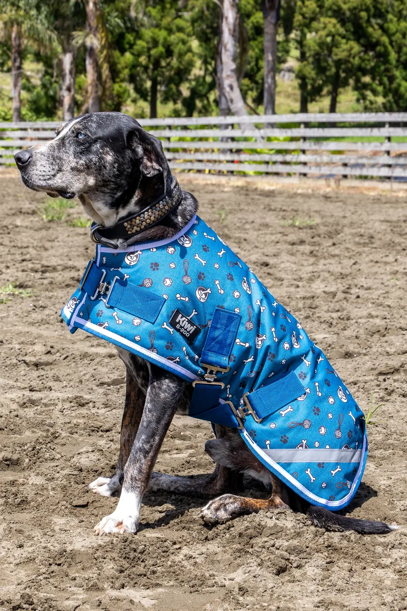
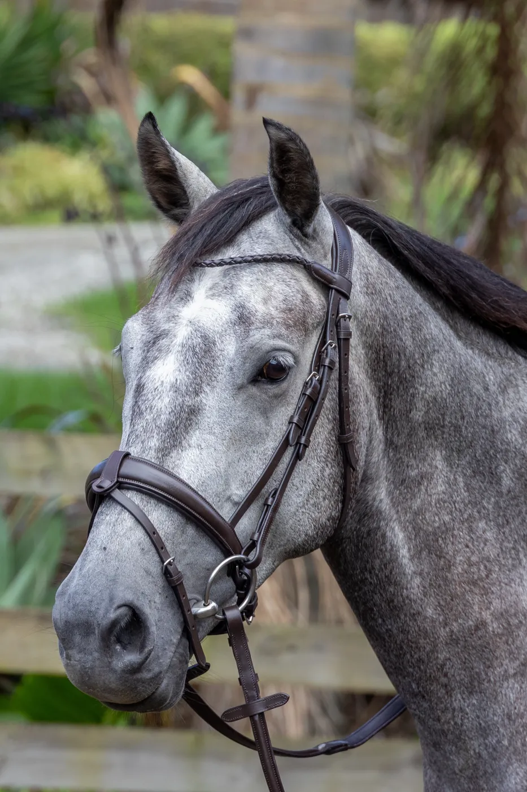
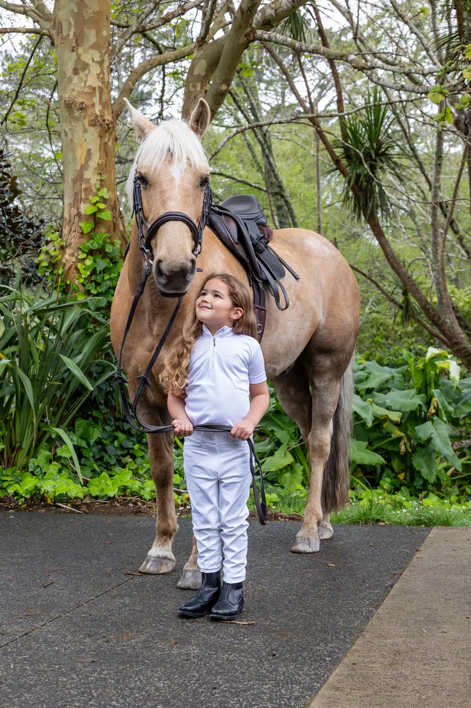
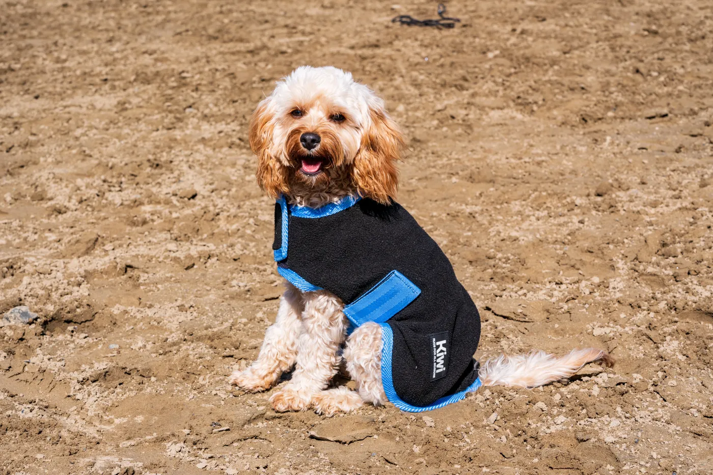
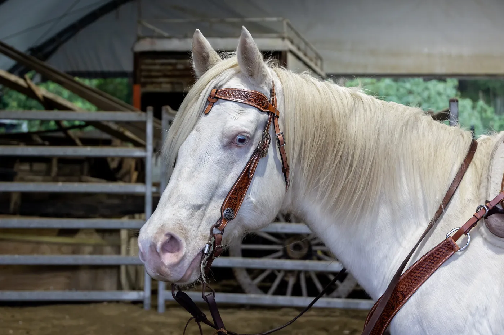
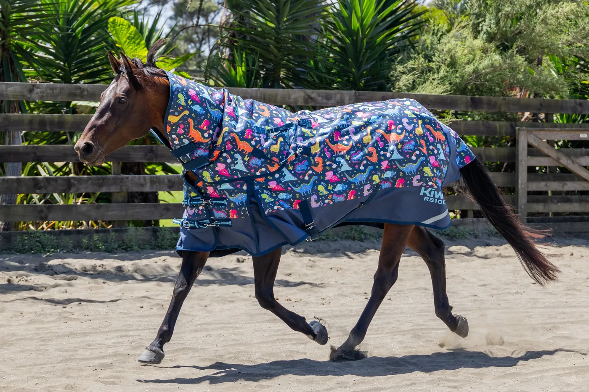
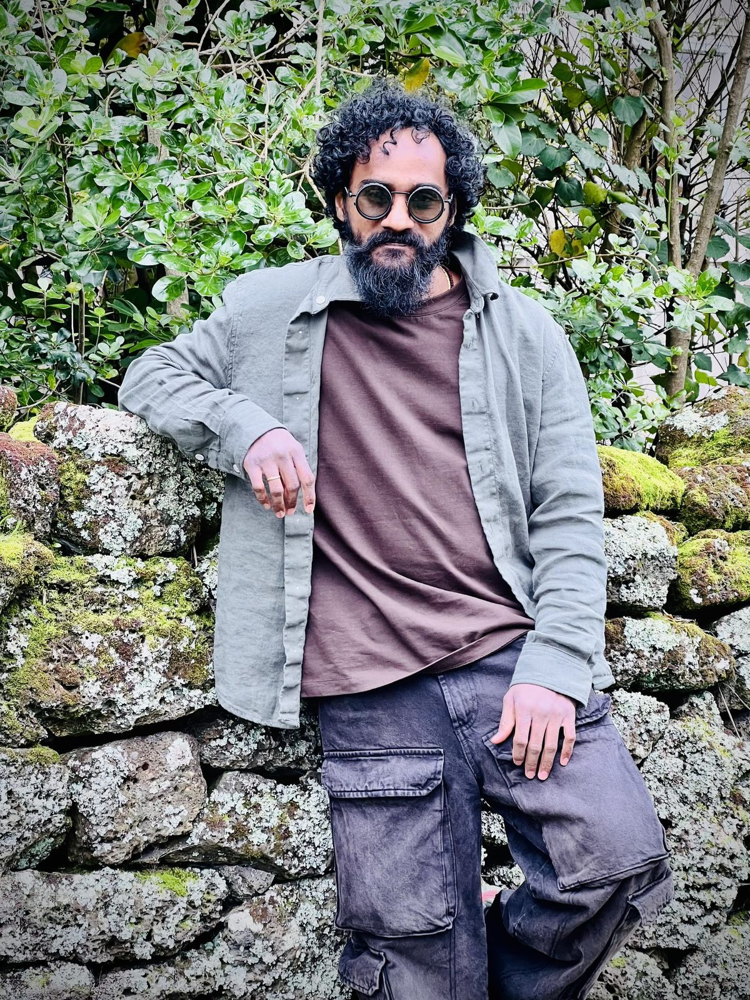

TITAN
AI CONCEPT FILM
1.9M+
VIEWS ON INSTAGRAM
NIKHIL MUNJAMPALLI · AUCKLAND
MAKE
ONE CREATIVE. MANY MEDIUMS.
NIKHIL MUNJAMPALLI · AUCKLAND
ONE CREATIVE. MANY MEDIUMS.
I'm an Auckland-based Content Creator, Video Editor & Graphic Designer with 17+ years of creative experience. I work across social media, video, photography, branding, digital campaigns, eCommerce and print — currently creating content and marketing campaigns for Saddlery Warehouse, a nationwide equestrian retailer.
I DESIGN.
CHAPTER 01
Retail campaigns, product branding and print — built to earn the pause, then the click.
CHAPTER 02
Brand films, product videos and short-form social content, including clearly labelled AI-assisted concepts.
CHAPTER 03
Commercial photography of horses, riders, dogs and products, for campaigns, catalogues and online retail.






THE LAB
Self-initiated films, AI experiments and visual ideas developed outside commercial briefs.

ABOUT
I'm a designer first, and I also shoot and edit, so an idea can go from sketch to shoot to final cut without changing hands. I design for Saddlery Warehouse, a nationwide equestrian retailer, with photography, film and self-initiated work alongside it.
EARLIER WORK
CONTACT
Hiring for a design role, or need something made? Get in touch — I reply fast.